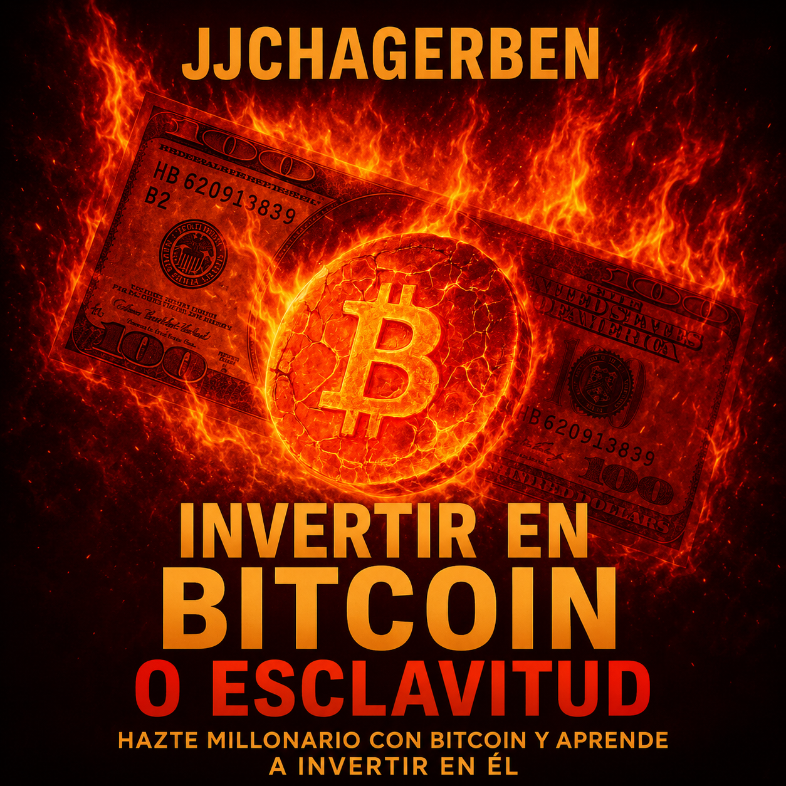

El origen del dinero
El libro comienza explorando la relación entre el ser humano, la pobreza y el dinero, para posteriormente analizar qué es el dinero y cuáles son sus propiedades.
Libro digital
Hazte millonario con Bitcoin y aprende a invertir en él
Una mirada a la historia del dinero, la inflación, el sistema monetario y Bitcoin, desde la perspectiva del autor.
QUIERO CONOCER EL LIBRO
Contenido del libro
El libro no comienza hablando de Bitcoin. Antes recorre el origen del dinero, su historia y el sistema que usamos hoy, para luego conectar todo con Bitcoin, la inversión y la seguridad.
El libro comienza explorando la relación entre el ser humano, la pobreza y el dinero, para posteriormente analizar qué es el dinero y cuáles son sus propiedades.
Recorre distintos momentos de la historia monetaria: Roma, los templarios, el florín, el real portugués, el real español, la bolsa de Amberes, la libra francesa y la libra esterlina, mostrando la evolución de las monedas y los sistemas monetarios.
Analiza acontecimientos como la Primera Guerra Mundial, la inflación, la Reserva Federal, Bretton Woods, el final del patrón oro, la decisión de Nixon en 1971 y la expansión del dinero fiat, conectando estos hechos con la crítica del autor al sistema monetario actual.
Presenta qué es Bitcoin, su escasez, su descentralización, su funcionamiento basado en reglas matemáticas, una comparación con el oro y la idea de propiedad y soberanía sobre los propios fondos.
El libro aborda la inversión en Bitcoin, la acumulación, la preparación, la disciplina, la lectura, la creación de ingresos y una comparación entre Bitcoin y bienes raíces, dentro de una estrategia a largo plazo. Este contenido refleja el análisis del autor y no constituye asesoría financiera personalizada.
Uno de los bloques más prácticos: llaves privadas, custodia, wallets, exchanges, cómo reconocer estafas, promesas de rentabilidades imposibles y ejemplos de esquemas relacionados con criptomonedas. No basta con conocer Bitcoin: también hay que saber protegerlo y reconocer posibles fraudes.
Estructura del libro
Antes de seguir leyendo
¿Qué hace que algo sea considerado dinero?
¿Por qué algunas monedas perdieron su valor?
¿Qué ocurrió con el patrón oro?
¿Cómo llegamos al actual sistema de dinero fiat?
¿Qué diferencia a Bitcoin de las monedas tradicionales?
¿Qué significa realmente controlar tus propios Bitcoin?
¿Cómo reconocer una promesa de rentabilidad que parece demasiado buena para ser cierta?
El libro no aborda Bitcoin únicamente desde su precio. También explora su origen, funcionamiento, escasez, custodia, relación con el dinero tradicional y la forma en que el autor interpreta su papel dentro del sistema monetario.
Contenido aplicado
El libro dedica un capítulo específico a identificar señales de posibles fraudes relacionados con Bitcoin y otras criptomonedas.
Promesas como "1% diario" pueden ser una señal de alerta que el libro invita a reconocer.
El libro analiza diferentes episodios de especulación y estafas relacionados con criptomonedas.
Explica la importancia de comprender las llaves privadas y quién tiene realmente el control de los fondos.
Puede resultar interesante para personas que quieren comprender mejor el dinero, la inflación, la historia monetaria y Bitcoin antes de tomar sus propias decisiones.
También puede interesar a lectores que disfrutan de economía, historia, inversiones, Bitcoin, finanzas personales, sistemas monetarios y libertad financiera.
Libro digital · JJCHAGERBEN
$10
COMPRAR EL LIBROEste libro representa la perspectiva y el análisis del autor. La decisión de invertir corresponde siempre al lector.
Conoce el recorrido que propone este libro desde la historia del dinero hasta Bitcoin, la inversión y la seguridad.
QUIERO LEER EL LIBRO